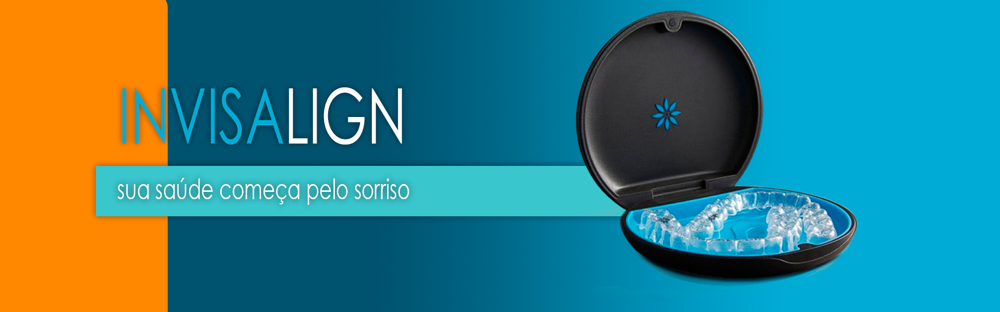

Invisalign: alinhadores invisíveis e eficazes. Corrija seu sorriso sem aparelho.
O invisalign é um sistema de alinhamento dentário que utiliza placas transparentes e removíveis, chamadas de alinhadores. Esse tratamento oferece diversas vantagens em relação aos aparelhos fixos convencionais, como:
- Maior conforto e estética, pois os alinhadores são praticamente invisíveis e não interferem na aparência do sorriso.
- Maior higiene e saúde bucal, pois os alinhadores podem ser retirados para a escovação e o uso do fio dental, evitando o acúmulo de placa bacteriana e o risco de cáries e gengivites.
- Maior rapidez e precisão, pois os alinhadores são planejados por um software 3D que simula o resultado final do tratamento e determina o tempo necessário para cada etapa.
O tratamento com o invisalign é indicado para casos de maloclusão leve a moderada, como dentes apinhados, espaçados, tortos ou com mordida cruzada, aberta ou profunda. Para saber se você é um candidato ao invisalign, consulte um ortodontista credenciado e faça uma avaliação.


Todos os direitos reservados 2023 - Ricardo Santos